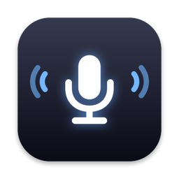

NotchMic turns your MacBook into a Dictation switch. Knock twice on the laptop and macOS starts listening. Knock twice again and it stops. Your words land wherever your cursor is.
Two ways in, and typing stays out of it
-
Double-tap the laptop
Two firm taps on the body, about as fast as a double-click. NotchMic feels them through the motion sensor already inside your MacBook.
-
Click beside the notch
A faint mic sits just right of the camera notch. Click once to start, click again to stop.
-
Typing never sets it off
Keystrokes shake a laptop too. Any bump within 0.3 seconds of a key press or click is ignored, so writing an email won't start Dictation.
How a knock becomes a microphone
Apple-silicon MacBooks carry an accelerometer that macOS doesn't advertise. It streams about 800 readings a second, and any app can read it without admin rights. NotchMic watches that stream for jolts.
- A reading more than 0.02 g away from the running average is a jolt. The average is gravity, so NotchMic knows which way is down and splits each jolt into vertical and sideways parts. Only jolts that go mostly down count, so sliding the laptop does nothing.
- Jolts within 0.1 seconds of each other are one tap still ringing.
- NotchMic waits 0.15 seconds, then drops the tap if a key or click happened nearby.
- Two taps 0.12 to 0.6 seconds apart press the frontmost app's Start Dictation. The next pair sends Escape to stop it.
Install
- Download NotchMic.zip, unzip it, and drag NotchMic into Applications.
- Open it. NotchMic isn't notarized by Apple, so the first launch is blocked. Go to System Settings, then Privacy & Security, and click Open Anyway. Or run:
xattr -dr com.apple.quarantine /Applications/NotchMic.app - Allow Accessibility when asked. NotchMic uses it to press the Dictation menu item and to notice your typing. It never records which keys you press.
- Turn on Dictation in System Settings, under Keyboard.
- Add NotchMic to Login Items if you want it running all the time.